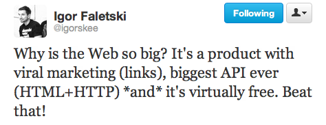

Tech, Lock-in, and the Web: Using PhoneGap & HTML5 To Go Cross-Platform
Fil Maj, Adobe Systems
who's this?
Fil Maj
Master Exploder at Adobe Systems, eh


PhoneGap
... soon
but first: brief history of technology
this is relevant, hang in there!
Technology
Tools that help us extend our perceived world
The best technology helps us create connections
Brief History
awesome shit that made us smarter
- literacy, alphabet
- maps, books
- printing press
- telegraph
- telephone
incremental tech that changed the way societies, cultures and the human race progressed
Stepping it up a notch

taking it to the next level, 20th century style
Computers
An idea preceeded the computer...
Memex
- Article published in 1945 by Dr. Vannevar Bush, "As We May Think"
- Microfilm-based "knowledge desk"
- Using "associative links" between content
... enlarged intimate supplement to one's memory.

Intarwebz
ARPAnet, CSNET, et al, eventually lead to Tim-Berners Lee inventing the Web
HyperCard
- Originally released in 1987
- Stack of cards that can be linked together
- Super easy to develop
- Basic scripting support included (HyperTalk)
- free
- Essentially: sandboxed local web
It was not lost on Apple or its mainstream developers that the power HyperCard gave to people could cut into the sales of ordinary shrink wrapped products.
Today: Mobile Web
Today we are connected all the fkn time
- our memory/knowledge extends beyond our mind
- our perceptions extended with new sensors
arguably making us more intelligent beings...
... arguable ;)
The Web
pretty rad right?
Proprietary APIs
When we close a platform, we create vendor lock-in
creates a switching cost
tons of examples of this all around us
inkjet printer <=> ink
Connector Conspiracy
Exhibit 1
Exhibit 2
The Windows API is so broad, so deep, and so functional that most software vendors would be crazy not to use it. And it is so deeply embedded in the source code of many Windows apps that there is a huge switching cost to using a different OS instead.- Aaron Contorer, internal Microsoft memo, Feb. 21, 1997
Exhibit 3
With early iPhone SDK, developers had to agree to an NDA that forbade [them] from discussing the content of the iPhone APIs.
WTF!
Luckily, Apple abandoned this section of their TOU in Oct. 2008.
The Cure?
... not this. plz.
We Fight This With Openness
Web As A Platform
(Short) tangent back in time...
Remember Gopher?
Competed with the web
Attractive early on for smaller network resource use
University of Minnesota maintained implementation
Then UofM decided to start charging license fees for gopher
Where'd the Rodent Go?
The Open Web
Tim Berners-Lee, writer of the first HTTP and HTML specs, physicist working at CERN.
He wanted to connect scientists at CERN so they could share data.
So he invented the web.
BADASS
Back to HTML5 in the Real World
Native apps are kicking web's ass
APIs like accelerometer, compass, contacts, etc.
BUT! Geo is here. Accelerometer is next. W3C DAP group leading the way.
Fucking Finally: PhoneGap
MIT license, as open as it gets!
Obtained by Adobe in November 2011
I work full-time on open source software. I'm lucky.

Apache Cordova
PhoneGap -> Cordova as Chrome -> WebKit
Write Apps With Web Tech
Deploy To Six Platforms

Augment The Web With Native APIs

Get at those sensors!
Full API docs available at docs.phonegap.com
Example: Accelerometer
function onSuccess(acceleration) {
console.log('Acceleration X: ' + acceleration.x + '\n' +
'Acceleration Y: ' + acceleration.y + '\n' +
'Acceleration Z: ' + acceleration.z + '\n' +
'Timestamp: ' + acceleration.timestamp + '\n');
};
function onError(e) {
console.log('Error! ' + e.message);
};
var options = {frequency:100}; // get updates every 100 ms
navigator.accelerometer.watchAcceleration(onSuccess, onError, options);
Deploy To App Stores
PhoneGap/Cordova "wraps" your web assets into a native binary.
Not A Silver Bullet
Will not wash your dishes.
Write Once, Debug Everywhere
HyperCard didn't ship a debugger until 2.0!
Hardcore 3D Shit
Web tech is probably not the best choice for this problem.
But! BlackBerry 6+ supports WebGL...